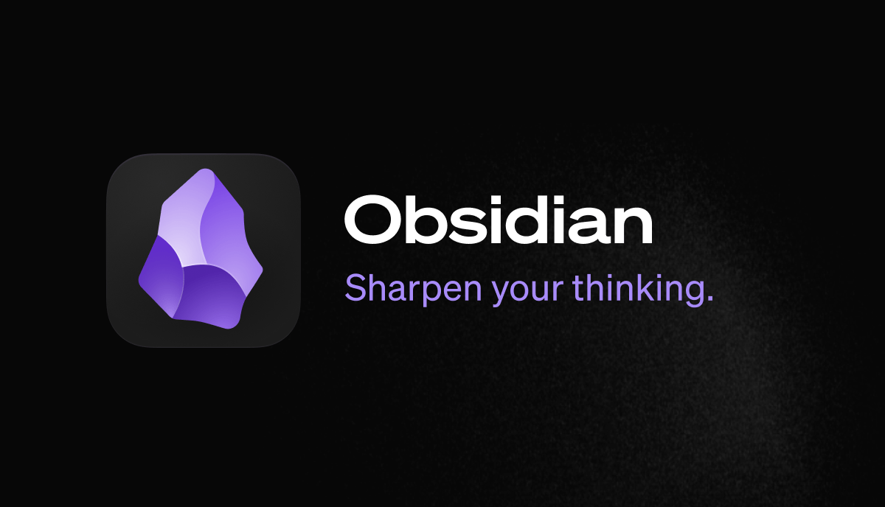
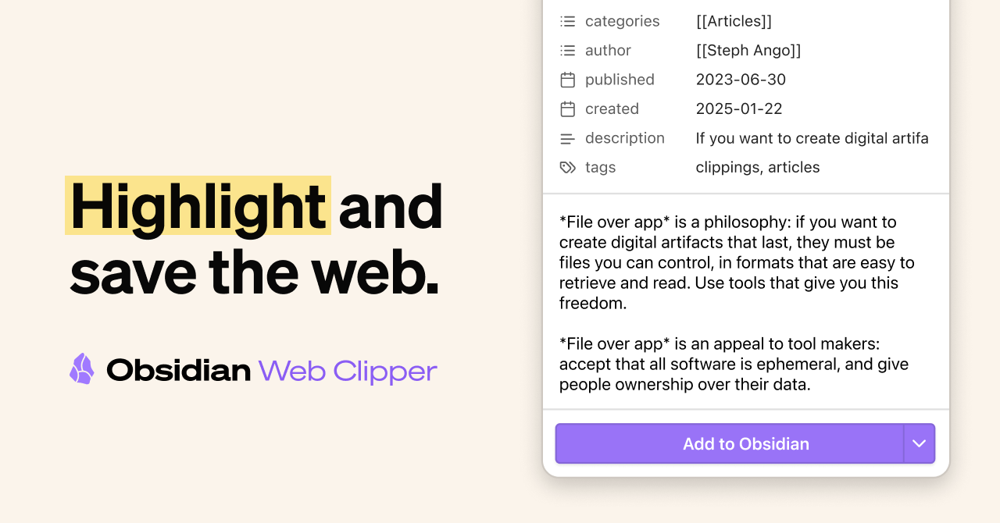
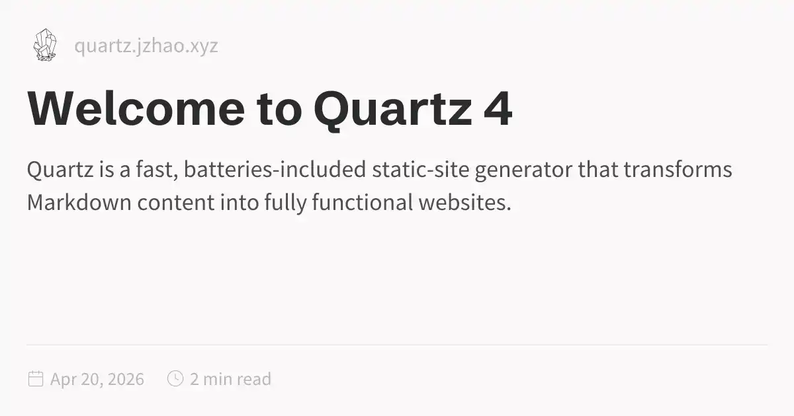
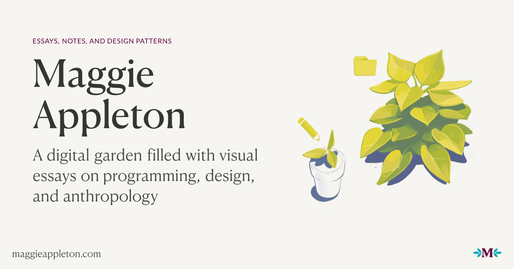

Drawing A-001 · Vault floor plan · Issued 2026-04-30
A working drawing for a technical Obsidian vault: PARA-shaped skeleton, Zettelkasten-atomic notes inside Areas, Properties-first metadata, daily-note inbox, MOCs over deep folders, and a small high-value plugin set. Scale 1:1, dimensioned in citations.
key:: value is ignored[17].
.base file format[17][54]. Power users in 2026 report replacing every Dataview query with a Bases table[55]. Meta Bind keeps YAML values editable inline[19].
status is text or list, then live with it. Define everything in a master-schema note[20]; let Obsidian autocomplete prevent drift like status vs progress[22]. Plural tags/aliases/cssclasses are mandatory as of 1.9[21].
| P/N | Property | Type | Value space (technical-vault example) |
|---|---|---|---|
| F-01 | typediscriminator | TEXT · req | snippet · howto · reference · project · runbook · daily[20] |
| F-02 | status | TEXT | seed · growing · evergreen · archived (one type per name vault-wide[15]) |
| F-03 | tags | LIST | plural only; singular tag deprecated 1.9[21] |
| F-04 | aliases · cssclasses | LIST | plural only[21] |
| F-05 | language | TEXT | python · rust · bash (free-text + autocomplete prevents drift[22]) |
| F-06 | source | TEXT/LIST | URL of capture origin |
| F-07 | created · updated | DATE/DATETIME | ISO 8601 for reliable sort[21] |


"Cross-tool / automation backwards-compat"[50]
"Bottom-up emergent hubs — earn the map"[48]
"Verbs & status — #FollowUp #🌱seed #🌲evergreen"[51]
| P/N | Plugin | Status | Stars | Purpose |
|---|---|---|---|---|
| F1-01 | Basesobsidian core | CORE 1.9 | — | No-code visual database; replaces Dataview tables for most users[16][55] |
| F1-02 | Dataviewblacksmithgu | LEGACY | — | Inline-field queries; DQL/JS — keep for legacy[19] |
| F1-03 | Datacoreblacksmithgu | BETA | — | React-based heir for interactive components[54] |
| F1-04 | DB FolderRafaelGB | ARCHIVED JUL 2025 | ⭐ 1.4k | Migrate to Bases or Datacore[59] |
| F1-05 | Projectsmarcusolsson | ARCHIVED JUL 2025 | — | Community fork obsmd-projects carries it forward[60] |
| P/N | Plugin | Status | Stars | Purpose |
|---|---|---|---|---|
| F2-01 | QuickAddchhoumann | ACTIVE | ⭐ 2.2k | Capture macros; daily-note bullet primitive[29] |
| F2-02 | TemplaterSilentVoid13 | ACTIVE | ⭐ 4.9k | JS-capable templating engine; v2.20.0 (Apr 29 2026)[56] |
| F2-03 | Web Clipperobsidianmd / official | OFFICIAL | ⭐ 4.1k | Cross-browser; YouTube transcripts in 2026[63][42] |
| F2-04 | Linterplaters | ACTIVE | ⭐ 1.9k | 80+ rules over YAML, headings, footnotes, spacing[58] |
| F2-05 | Excalidrawzsviczian | ACTIVE | ⭐ 6.8k | Embedded sketches, LaTeX, OCR, script API[57] |
| F2-06 | PDF++RyotaUshio | ACTIVE | ⭐ 2.2k | PDF highlights as Markdown backlinks (not embedded)[33] |
| P/N | Plugin | Status | Stars | Purpose |
|---|---|---|---|---|
| F3-01 | Smart Connectionsbrianpetro | ACTIVE | ⭐ 4.9k | Local-first by default (no API key); optional 100+ models[61] |
| F3-02 | Copilotlogancyang | ACTIVE | ⭐ 6.8k | Vault chat + agent mode; PDF/EPUB ingestion; Plus-tier diff edits[62] |
| P/N | Plugin | Status | Stars | Purpose |
|---|---|---|---|---|
| F4-01 | Find Orphaned Files+ Broken Links report | ACTIVE | — | MD report of unbacklinked notes & dangling wikilinks[72] |
| F4-02 | Broken Links | ACTIVE | — | Folder/file/consolidated views of dangling links[73] |
| F4-03 | Nuke Orphanssandorex | ACTIVE | ⭐ 53 | Trash orphaned attachments behind a confirmation prompt[74] |
| F4-04 | AutoMOC + Backlink Cache | ACTIVE | — | Keep MOCs and the Backlinks pane fast at 2k+ notes[53] |
| F4-05 | Periodic Notes | ACTIVE | — | Daily/weekly/monthly/quarterly/yearly review templates[70] |
publish: true via Quartz ExplicitPublish; vault stays source of truth; public- prefix for attachments[79].| P/N | Tool | Cost | Strength | When to pick |
|---|---|---|---|---|
| H1-01 | Quartz v4 | FREE | Obsidian compat, search, graph, wikilinks, transclusions, backlinks, LaTeX, popovers, i18n[77] | Default for free public garden; ~30–60 min setup[78] |
| H1-02 | Obsidian Publish | $8–10/MO | Zero-config from inside the app[78] | When you'll pay to skip ops |
| H1-03 | Material for MkDocs | FREE | Polished docs theme[80] | Vault is more documentation than garden |
| H1-04 | Astro Starlight | FREE | Fast docs theme on Astro[81] | JS-leaning gardeners migrating from MkDocs |
| P/N | Tool | Stars | Best for | Trade-off |
|---|---|---|---|---|
| H2-01 | FoamVS Code | ⭐ 17k | Devs who already live in VS Code; notes alongside source[64] | Leans on extensions for what Obsidian gives natively |
| H2-02 | SilverBulletPWA / self-hosted | ⭐ 5.2k | Self-hosters; Lua scripting, Objects/Queries, offline-first[66] | Web-first UX, smaller plugin pool |
| H2-03 | Logseq | — | Rapid block-outline capture[65] | Flat structure feels chaotic for technical reference |
| H2-04 | Tana | — | Structure-first PKM; supertags impose typed schemas[67] | Proprietary, no file portability |
| H2-05 | Reflect | $10/mo | Calendar-bound meeting notes; GPT-4o / Claude Sonnet selectable[68] | Paid-only, narrower than Tana |
For developers wanting CLI integration, large-vault performance and Git-friendly Markdown, Obsidian still wins — the 2026 release of an official Obsidian CLI widened the gap with Logseq for technical workflows[69].


00 MOCs / 01 Projects / 02 Areas / 03 Resources / 04 Permanent / 05 Fleeting / 06 Daily / 07 Archives / 99 Meta if starting fresh[1], or migrate gradually if you have an existing tree.key:: value fields to YAML to feed Bases[17].Six-angle expedition — capture, frontmatter, KB, media, publishing, AI.
Capture friction across desktop, mobile, web, voice; AI tag/metadata backfill.
YAML frontmatter and tag taxonomies external tools can extract.
Hardcover for books, Simkl for film/TV; Readwise + CrossWatch automation.
Opt-in (whitelist) frontmatter pattern over draft-style opt-out.
Smart Connections + Copilot + Smart Composer + Khoj.